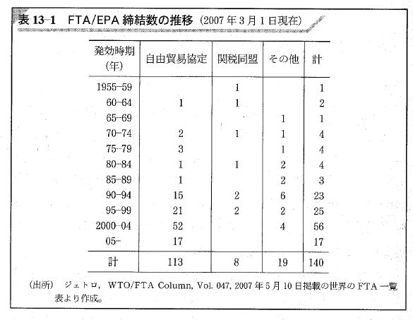

08/貿易交渉
国際政治経済I
2026-06-08
今日の目次
- はじめに
- 貿易交渉の現況
- 空間モデルの概要
- 空間モデルと分配問題
- 2レベルゲーム
- まとめ
はじめに
先週のRPより (1/2)
規模の小ささと選択的誘因によって、フリーライダー問題が防止されるという点は理論っぽさを感じたが、規模の小ささが団結力を強め政治に圧力をかけるという点は現実的な話に思え、他の国や業界でもこのような動きが起こるのかについて気になった。
先週のRPより (2/2)
保護主義のパラドックスの話で、農業従事者日本の主要五品目が農産物であり、農業に従事している人はとても少なく、減少傾向にあるということは、民主主義的におかしいという話があまり理解できませんでした。…実際農業従事者の所得は低いままで、そこまで利益を得ているようには思えないです。農産物を作るのに必要な農業従事者が足りないのであれば、関税を高くして価値をあげるというのは当たり前のことではないのでしょうか。農業従事者も自給自足しているわけではないですし、関税がかかっているものを買わないわけではないと思います（農業従事者も消費者の性格をもっている）。農業従事者に利益がいっているいっていいのでしょうか。（参考）
本日の目的と到達目標
目的
貿易をめぐる国家間交渉の実情を概観するとともに、空間モデルや2レベルゲーム論を学んで交渉の成否を理論的に考察する。
到達目標
- 貿易交渉について、GATT体制での原則とドーハラウンド後の実情を説明できる。
- 空間モデルに基づいて、貿易交渉の成立のしやすさを議論できる。
- 貿易交渉における交渉力の源泉を3つ列挙できる。
- 2レベルゲーム論に基づいて、政治体制と交渉力の関係を議論できる。
本日の授業の位置付け

貿易交渉の現況
GATT体制と貿易交渉
GATT体制…多国間主義に基づく戦後の自由貿易体制（次週）
- 多角的貿易交渉（ラウンド）
- 加盟国が一堂に会して貿易交渉
- ケネディ、東京、ウルグアイ…
- 二国間や地域内での交渉・協定は例外
- 一定の条件を満たす必要
- 戦前のブロック経済の反省
FTA/EPA/関税同盟の締結数

シアトルの挫折とドーハラウンド
1999年11〜12月 シアトル閣僚会議
- 史上初めて新ラウンド開催できず
- 反グローバリズム…労働者保護や環境問題への懸念
2001年11月 ドーハ閣僚会議
- 9.11テロからの復興を目指す
- 153カ国の参加→ドーハラウンドの開始
- 正式「ドーハ開発アジェンダ」
ドーハラウンドの挫折
2006年7月 交渉の無期限中断
- 部分的な合意を積み重ねる「新しいアプローチ」＝事実上の頓挫
- 先進国と途上国の対立
- 農業自由化、鉱工業自由化、投資環境整備が争点
以降、二国間・地域間協定の活発化
- 自由貿易協定／経済連携協定
- 地域経済統合
空間モデルの概要
空間モデル (spatial model)
交渉の成否や結果を予測するためのモデル
- 交渉当事者を物理的な空間上に位置付け
主張：
- 交渉当事者間の距離が大きくなると交渉成立の可能性が低くなる
- 交渉当事者間の受け入れ可能な範囲が大きくなると交渉成立の可能性が高くなる
日米貿易交渉の例
日本と米国が車と米の関税率を巡って交渉
空間モデルと分配問題
分配問題
勝利集合の中でどの結果になるか
クイズ
今自動車ディーラーの営業マンがお客さんと商談中です。
- 営業マンはあと1週間でもう1台の売り上げを作る必要があります。他方、お客さんは3ヶ月以内に納車して欲しいと考えています。この時、営業マンとお客さんはどちらが有利ですか？
- お客さんは別のディーラーが近くにあり、そこでも商談をしたことがあると営業マンに伝えました。この時、営業マンとお客さんはどちらが有利になりましたか？
- お客さんが「奥さんに『予算は200万以内、それ以上の車を買ったら離婚する』と言われた」と営業マンに伝えました。もしこれが本当だとすると、営業マンとお客さんはどちらが有利だと思いますか？
交渉力 (bargaining power)
分配問題における取り分を決定する力
- 忍耐…今交渉に合意する必要がない
- 他の選択肢…この交渉でなくても他に相手がいる
- 私的情報…自分の情報を隠せる
- ただし交渉不成立のリスク
私的情報戦略
2レベルゲーム
2レベルゲーム (two-level game)
ロバート・パットナムの提唱1
国際交渉の中に国内の視点を導入
- レベル1ゲーム…国家同士の交渉
- レベル2ゲーム…国内における交渉
国家を一枚岩と見ない点でリベラル

日米2レベル貿易交渉
車と米の関税率交渉
- レベル1…日本と米国
- レベル2…日本国内の農家と自動車産業
2レベルゲームの含意
国内の多様性が強い交渉力をもたらす
- 強硬派の存在→狭い無差別曲線→有利な勝利集合
- ただし同時に失敗する可能性も高い
Think-pair-share (-10分)
2レベルゲーム論を踏まえると、民主主義国家と権威主義国家どちらが有利か？
- Think (1分)…1人で考える
- Pair (2-3分）…ペアで考える
- Share (2-3分）…全体に共有
まとめ
本日の目的と到達目標
目的
貿易をめぐる国家間交渉の実情を概観するとともに、空間モデルや2レベルゲーム論を学んで交渉の成否を理論的に考察する。
到達目標
- 貿易交渉について、GATT体制での原則とドーハラウンド後の実情を説明できる。
- 空間モデルに基づいて、貿易交渉の成立のしやすさを議論できる。
- 貿易交渉における交渉力の源泉を3つ列挙できる。
- 2レベルゲーム論に基づいて、政治体制と交渉力の関係を議論できる。
次回までに
事後学習
- 授業資料を見直し、目標到達をセルフチェック
- Moodle上でのリアクションペーパー入力（木曜日まで）

貿易交渉